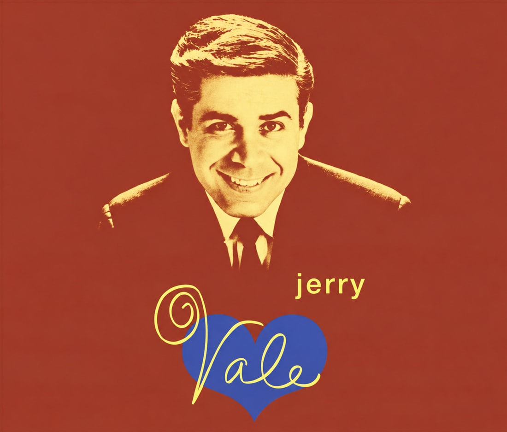
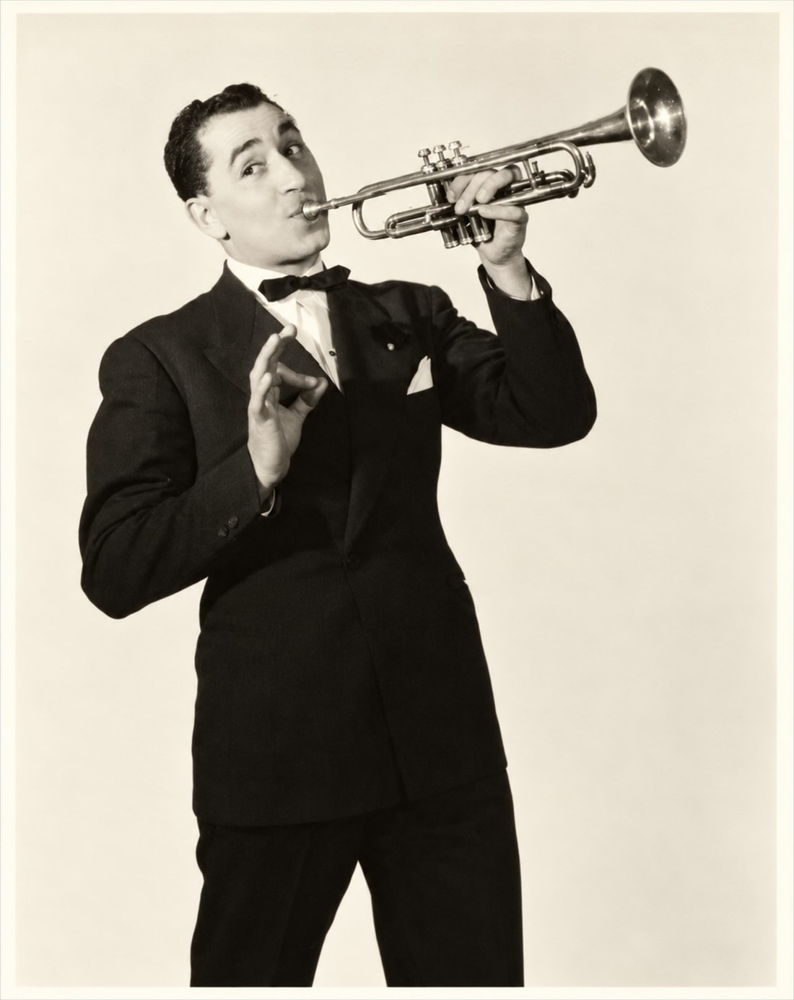
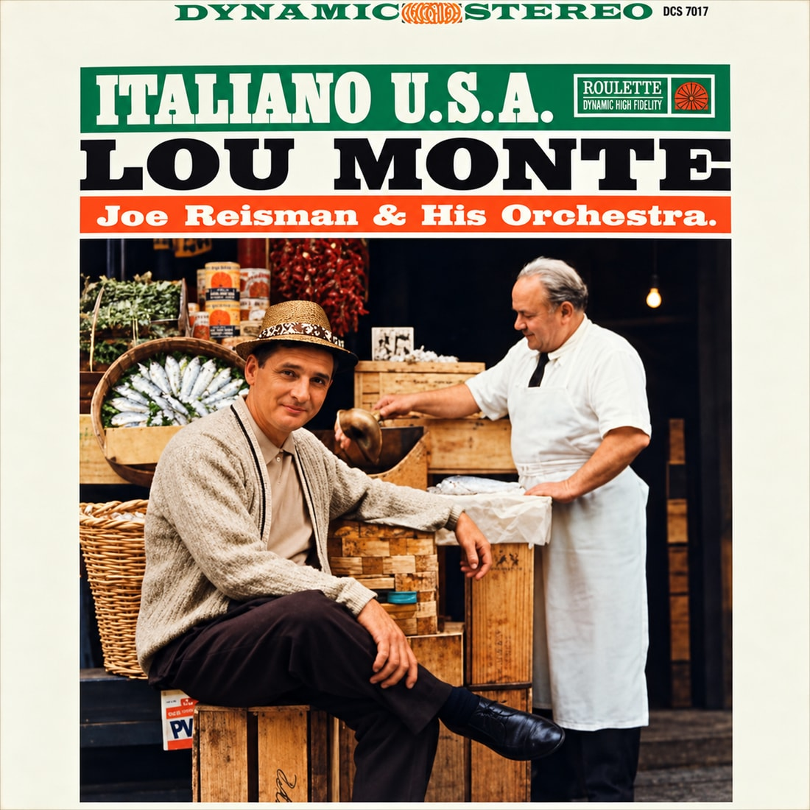

THE ITALIAN CENTER · LISTENING ROOM
Mob Hits.
The voices. The memories.
The songs that bring us together.
From “That’s Amore” to “My Way,” settle in with a collection of Italian and Italian American favorites.
20 tracks · 10 artists · Made for a little nostalgia
THE ITALIAN CENTER
MOB HITSCLASSIC COLLECTION
 Buon
Buon
ascolto!NOW PLAYINGChoose a favoritePress play on any song below.
Music starts when you choose a song. Playback stays on this page.
Your seat at the jukebox
A classic for every mood.
Pick a song. Sing along.
Let the memories do the rest.
20 songs
No songs match this artist. Choose All artists to see the full collection.
The soundtrack to good company.
SIDE 01
The familiar favorites
A little amore. A little nostalgia.
- ↗
Volare (Nel Blu Dipinto di Blu)
Dean Martin
On an Evening in Roma
Dean Martin
- ↗
Mambo Italiano
Rosemary Clooney

Pull up a chair. Stay for another song.
SIDE 02
The velvet voices
For the songs you know by heart.
Speak Softly, Love
Al Martino
To Each His Own
Al Martino
- ↗
Love Me the Way I Love You
Jerry Vale
Pretend You Don't See Her
Jerry Vale

Some songs just make you smile.
SIDE 03
A little swing
Turn up the rhythm.
Angelina / Zooma Zooma
Louis Prima
- ↗
- ↗
Domani (Tomorrow)
Julius LaRosa
- ↗

Old favorites. New memories.
SIDE 04
One more for the road
Keep the evening going.
Lazy Mary (Luna Mezza Mare)
Lou Monte
It Was a Very Good Year
Frank Sinatra
Theme from New York, New York
Frank Sinatra
My Way (Live, 1979)
Paul Anka
The Godfather Waltz
Nino Rota
♫Good music.
Even better together.
Bring that same spirit to an evening at the center.
Explore what’s on ↗